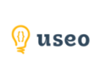
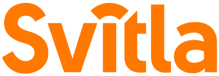
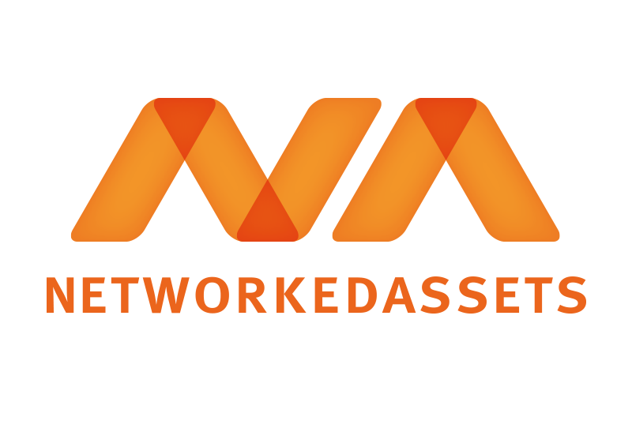

Hello world!
Rails Girls comes to Wrocław! Remember the date 17-18 December
2022!
During the free two-day workshop we'll dive into the magical world of Ruby on Rails.
Applications are closed! All accepted applicants will be informed till 5th of December!
You learn designing, prototyping and coding with the help from our coaches.
You need your own laptop, curiosity and a sprinkle of imagination!
Want to help? We are looking for sponsors, speakers and volunteers!
Email us
| 10:30 - 11:00 |
Registration, pre-conference mixerGet to know the attendees a little bit before hand.;) |
|---|---|
| 11:00 - 11.30 |
Official opening |
| 11:30 - 14:00 |
WorkshopLet's get coding! And let's start coding in Ruby! (so please bring your laptop) |
| 14:00 - 14:45 |
Dinner |
| 14:45 - 16:30 |
Workshop |
| 16:30 - 17:00 |
Lightning talksWe'll invite inspiring guests that have something interesting to say, about and beyond the code1. 2. |
| 17:15 - |
MiddlepartyMeet attendees and other people interested in tech. |
| 9:00 - 9:30 |
Cookies & tea/coffee |
|---|---|
| 9:30 - 11:45 |
WorkshopExtend your application. |
| 11:45 - 12:45 |
Lunch |
| 12:45 - 14:15 |
WorkshopExtend your application. Build something amazing! |
| 14:15 - 15:30 |
Lightning talks1.2. 3. |
| 15:30 - 16:00 |
Closing |
Applications
open: Wednesday 16th November
Applications
close: Friday 2nd December
Acceptances informed: Monday 5th December
Rails Girls Wroclaw is co-organized with our awesome sponsors and partners.
 Monterail is a company based in Wroclaw, established in 2010,
which specializes in creating complex web applications for start-ups, small and medium enterprises as well
as corporations. They employ over 170+ experts, who work with Ruby on Rails, Python, Node.js and
Javascript(Vue.js, React, Angular) technologies as well as Flutter and React Native frameworks for mobile
solutions for over 12 years.
Monterail is a company based in Wroclaw, established in 2010,
which specializes in creating complex web applications for start-ups, small and medium enterprises as well
as corporations. They employ over 170+ experts, who work with Ruby on Rails, Python, Node.js and
Javascript(Vue.js, React, Angular) technologies as well as Flutter and React Native frameworks for mobile
solutions for over 12 years.

USEO was established out of passion for Ruby on Rails technology nearly
12 years ago . This programming language is vital in the company activity even nowadays. They are able to
carry out projects from all over the world. They specialize in the long-term development of web application,
but building MVP for start-ups is not an unknown area for them. The main quality of the Wroclavian company
is the family atmosphere, built in the smell of coffee, great humour and all these things in the heart of
Wroclaw marketplace!

Svitla Systems is a certified woman-owned company, founded and managed since
2003 by Nataliya Anon, CEO. Svitla is a proud member of Women’s Business Enterprise National Council
(WBENC), promoting diversity and equal opportunities. It is a global IT solutions provider and a custom
software development company based in Silicon Valley, with 10 global locations throughout the US, Latin
America, Europe, and Asia. Among their Clients who rely on their expertise and service are some of the
leading global companies and well known brands in technology, pharmaceuticals, ecommerce, healthcare and
other growing industries. Svitla approaches every project – big or small – with the same level of care and
professionalism.

NetworkedAssets is a specialist in software-architecture and
software development located in Wroclaw and Berlin. The company focuses on the integration of data, devices,
and processes. They are passionate users and advocates of open source software with the JVM on Linux/Unix as
a technological ecosystem. This software house supports telecommunication companies in Europe and pretty
much enjoys doing it. Everyone there cares for a cozy environment of commitment, respect, and a friendly
atmosphere!
How much does the workshop cost? Nothing, it's free! You just need to be excited!
Who is this aimed for? Women of any age with basic knowledge of working with a computer. We’ve had people of all ages taking part. Speeches and workshops are in polish. Please bring your laptop.
Can men attend?
Yes, but you need to be accompanied by an interested lady.
I know how to program - How can I help? We're looking for partners, sponsors and speakers for the non-profit event! Email us